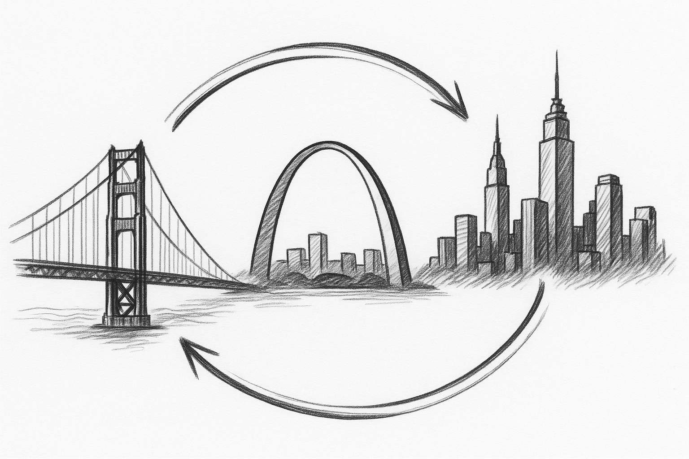

Building the innovation ecosystem that keeps talent in St. Louis

In 1904, St. Louis was booming. The World's Fair brought global attention. Washington University built Francis Field and the Brookings Quadrangle to host the Olympics. The city was at the center of the old economy, thriving with industry, culture, and ambition.
This is a stark contrast to today. While Washington University has grown from a regional "streetcar college" into a world-leading research institution, the city itself hasn't shared in that success. There's no startup culture, no innovation ecosystem, and no gravitational pull keeping talent here.
The brain drain is real. Sam Altman and Jack Dorsey both grew up in St. Louis and built their companies elsewhere. The exceptions prove the point: Square co-founder Jim McKelvey stayed and built LaunchCode here, showing what's possible when builders invest in the city. WashU continues to rise while St. Louis declines.
Economic development in the new economy doesn't happen by accident. It follows a pattern that repeats across thriving innovation hubs. The clearest example is Stanford and Silicon Valley:
Professor Frederick Terman encouraged Stanford students to stay local and start companies. He helped them secure funding and space. His vision was simple: keep talent in the region, build companies, and create an ecosystem.
Bill Hewlett and Dave Packard, Terman's students, founded HP in a Palo Alto garage with $538. Terman helped them secure their first contracts. HP became the foundation of Silicon Valley, proving that Stanford talent could build world-class companies locally.
HP's success attracted talent and capital. Fairchild Semiconductor was founded in 1957 by eight engineers who left Shockley Semiconductor Laboratory. Fairchild became the "mother company" of Silicon Valley, spinning out Intel (1968), AMD (1969), and dozens of other semiconductor firms. Each generation created the next.
Successful founders became investors. Former Fairchild and Intel executive Mike Markkula backed Apple (1976), and Kleiner Perkins, co-founded by Fairchild co-founder Eugene Kleiner, funded Sun Microsystems (1982). Risk capital concentrated in the region. The flywheel accelerated: ventures created capital, capital funded more ventures, and density attracted talent.
Silicon Valley became synonymous with innovation. Google (1998), PayPal (1998), Facebook (2004), and thousands of startups followed. The ecosystem became self-sustaining. Stanford research fed ventures, ventures scaled, successful exits created more capital, and capital funded the next generation. San Francisco transformed from a regional city into a global innovation capital.
It's recursive: research institutions create ventures → ventures scale → some create risk capital → risk capital funds and attracts talent for more ventures → density attracts more talent → talent creates more ventures. This is how cities thrive in the new economy.
We can't replicate Silicon Valley overnight, but we can start the flywheel. The ecosystem starts as a bridge between St. Louis and coastal risk capital. Eventually, ventures starting and scaling here will create risk capital and innovation density in St. Louis itself.
In San Francisco, New York, and Boston, building startups is fun, social, and cool. At WashU, it's often academic. That's not conducive to building big things. We need a space where creativity meets community, where building is joyful, not just rigorous.
In SF and NYC, students learn and build in the same place, and they stay because the ecosystem supports scale. In St. Louis, as soon as anyone gets traction, there's a burning question: "How do I get to the coast?" We need an innovation ecosystem that encourages people to stay here, with lower costs, strong universities, and growing density.
As ventures start here, some will scale. Some of those will create risk capital in St. Louis. That capital will fund the next generation of ventures. This is the recursive engine of economic development in the new economy.
In 1927, St. Louis business leaders pooled resources to back Charles Lindbergh's attempt at the Orteig Prize, a $25,000 reward for the first nonstop flight between New York and Paris. Lindbergh made the flight in about 33 and a half hours in the Spirit of St. Louis, and the prize sparked $16 of investment for every dollar offered. In the years that followed, airline passengers increased 30-fold and pilot license applications grew 300%.
St. Louis became synonymous with daring innovation. That moment proves what's possible when the city rallies behind bold ambition. Today, we face a different challenge: not transatlantic flight, but economic transformation. We need to recreate that spirit with startups, AI, biotech, and the future of technology. We need St. Louis to win the modern Orteig Prize: building an innovation ecosystem that rivals the coasts.
A physical and cultural space in the heart of St. Louis where builders come together. This is a student-run initiative that empowers WashU talent and the broader St. Louis community to build ventures locally:
We're looking for investors, sponsors, and founders who want to help start the flywheel in St. Louis. If that's you, we'd love to talk.
Get in touch